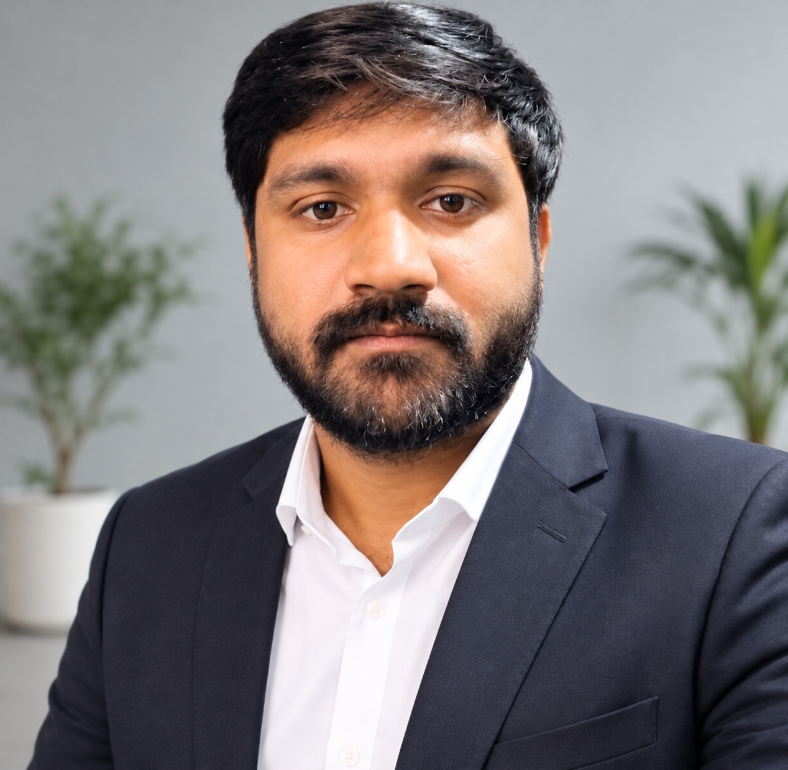

मेरा मकसद हर उस छात्र की मदद करना है जो सरकारी नौकरी की तैयारी कर रहा है और महंगी कोचिंग का खर्च नहीं उठा सकता। TaiyariGhar का जन्म इसी सोच के साथ हुआ है, ताकि हर छात्र तक बेहतरीन मॉक टेस्ट और स्टडी मटेरियल बिल्कुल मुफ्त या बहुत ही किफायती दाम में पहुँच सके।
हम और हमारी टीम मिलकर आपको बेहतरीन तकनीकी (Technical) और परीक्षा (Exam) सहायता प्रदान करेंगे। इसमें लेटेस्ट एग्जाम पैटर्न (Latest Exam Pattern) और करंट अफेयर्स (Current Affairs) से जुड़े डेली, वीकली, मंथली और ईयरली (Daily, Weekly, Monthly, Yearly) आधारित प्रश्न शामिल होंगे। आपको किसी भी प्रकार की कोई समस्या नहीं होगी। SSC, Railway, Bank और State Exams के अनुभव के साथ, मेरे साथी (Friends) और मेरी टीम इस प्लेटफॉर्म को सफल बनाने में मेरी मदद कर रहे हैं।
मैं (Madhup Verma) एक MIS Executive, Data Analyst और Web Developer के रूप में काम करता हूँ। मेरे इस तकनीकी अनुभव का इस्तेमाल मैंने TaiyariGhar को एक सुरक्षित, तेज़ और बेहतरीन प्लेटफॉर्म बनाने में किया है।